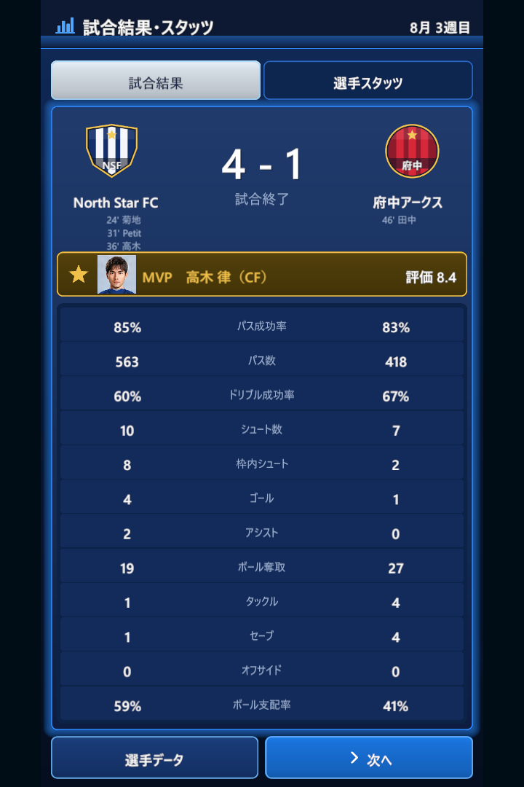
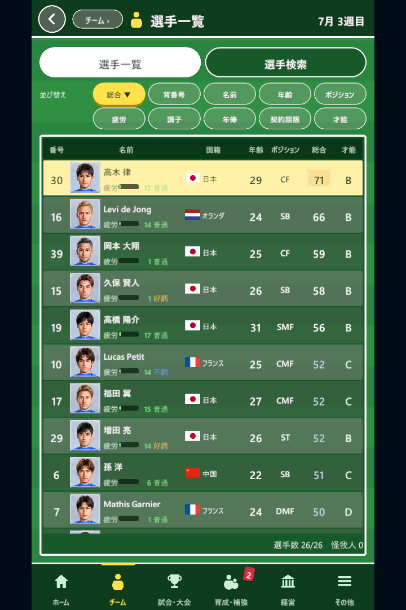
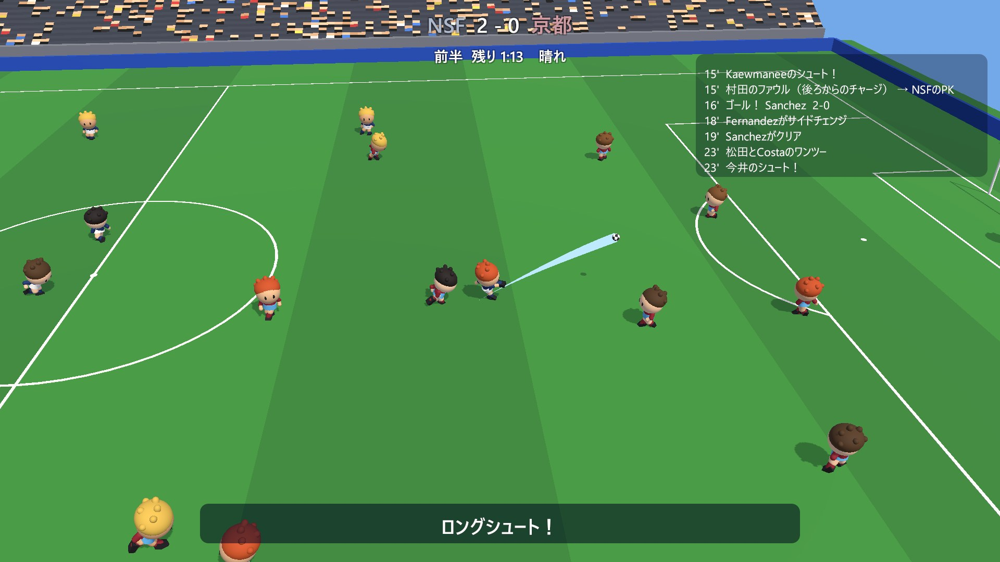
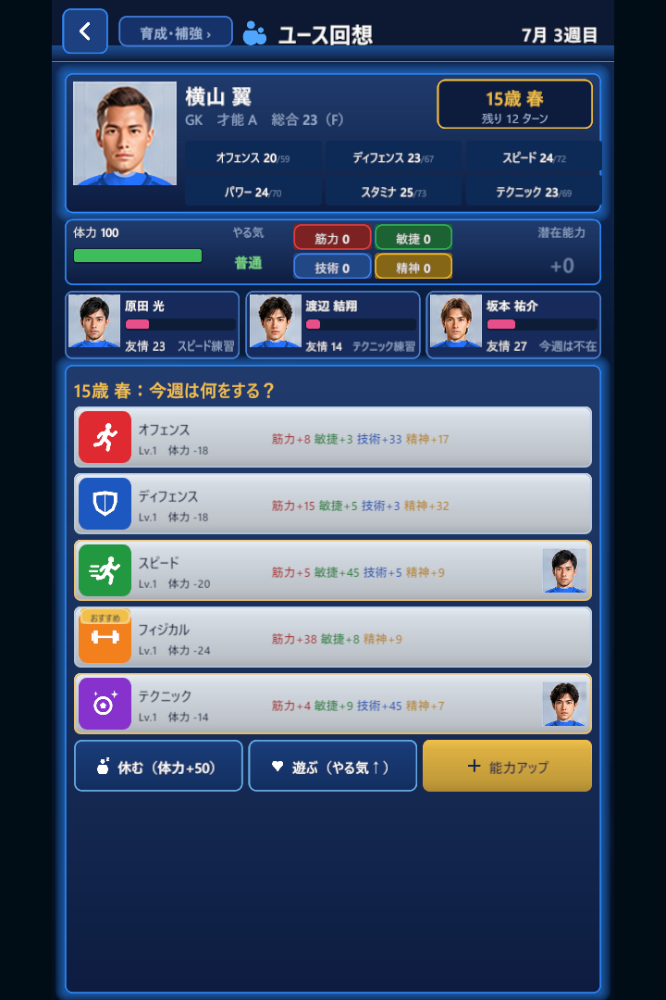
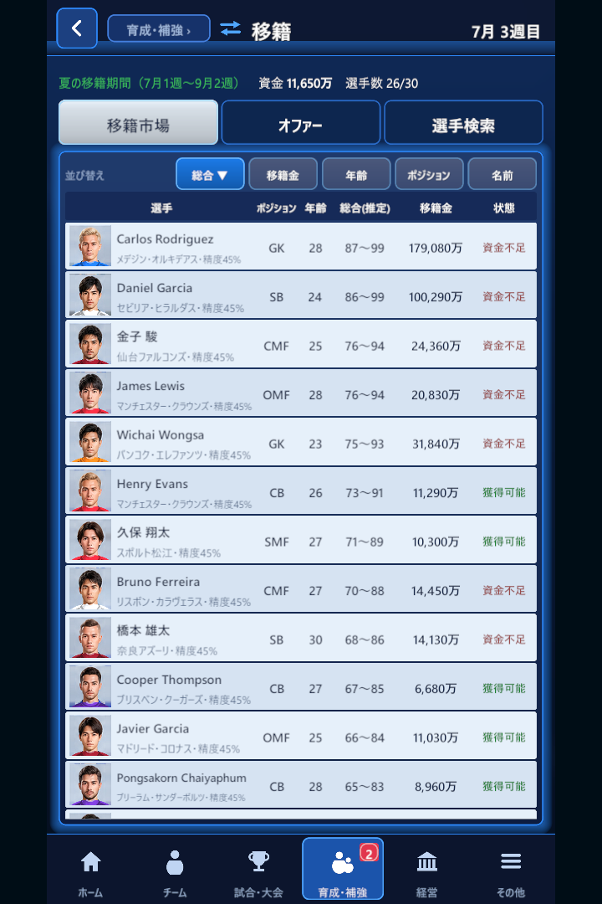
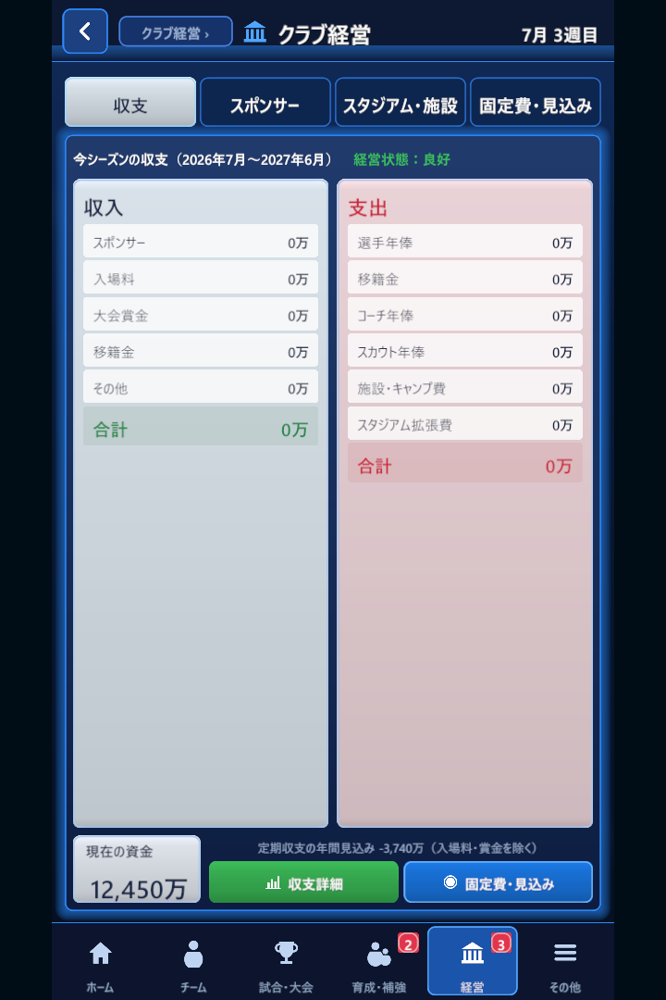
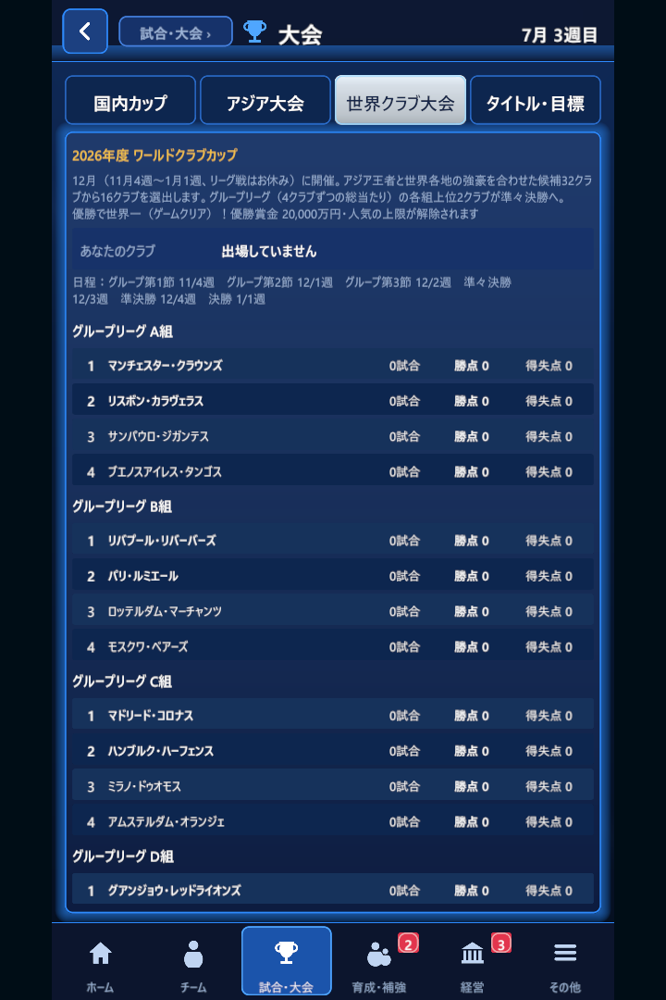

どんなゲーム？
あなたは3部リーグの小さなクラブ「North Star FC」の監督兼経営者です。1ターンは1週間。練習で選手を鍛え、試合に勝ち、資金を集めてクラブを大きくしていきます。
目指すのは、3部から2部、1部へ昇格し、国内カップとアジアの大会を勝ち抜き、最後に世界クラブ大会で優勝すること。世界一になるとゲームクリアです（その後も続けて遊べます）。




3Dの試合

試合は22人の選手が動く3Dで行われます。ワンツー、オーバーラップ、サイドチェンジ、ロングシュート、GKのセーブ……。選手の能力と、あなたが決めた戦術で試合の流れが変わります。
- ハーフタイムに作戦・フォーメーション・選手交代を指示できる
- 2倍速・4倍速・スキップで、見たいところだけ見られる
- 試合を見ずに結果だけ知ることも、2Dのハイライト表示に切り替えることもできる



ゲームの特徴
戦術とフォーメーション
フォーメーション6種類、戦術5種類。スタメンとベンチはドラッグで入れ替え。疲れた選手を自動で交代させる条件も決められます。

練習で選手を育てる
毎週の練習メニューで経験値がたまり、能力が上がります。疲れがたまると調子が落ちるので、休ませる選手も選びましょう。

ユースとユース回想
ユースの候補生を入団させるとき、15〜18歳の育成を振り返るミニゲーム「ユース回想」で、能力やスキルを伸ばせます。

移籍とスカウト
移籍は夏と冬の移籍期間だけ。他クラブの有望な選手は、スカウトが見つけてくれます。スカウトの腕が良いほど、選手の本当の能力やスキルが分かります。

クラブ経営
スポンサー契約、入場料、賞金で収入を得て、選手とスタッフの年俸を払います。施設を強化すると、育成や収入が良くなります。資金が尽きると補強できません。

7月のキャンプ
シーズン前のキャンプで、国内・アジア・欧州からキャンプ地を選び、テーマ（攻撃・守備・フィジカル）に合わせて選手の能力の上限を引き上げます。
世界一への道
- 3部リーグからスタート。各リーグは18クラブ。上位3クラブが昇格、下位3クラブが降格します。
- 1部で上位に入る。1部の上位クラブと国内カップの優勝クラブが、アジアの大会（7〜8月）に出場できます。
- アジアの大会で優勝する。グループリーグを勝ち抜き、準々決勝・準決勝・決勝へ。
- 世界クラブ大会（12月）で優勝すれば、世界一！世界各地の強豪16クラブとの戦いです。




強いクラブを作るには、選手を育てる力、お金をやりくりする力、試合で勝つ戦術のすべてが必要です。
大会のほかにも、自分のチームのデータを出力して、友だちのチームと親善試合をする「チームデータ交換」もあります。
遊び方を見る
画面の見方や1週間の進め方は、操作方法のページで紹介しています。